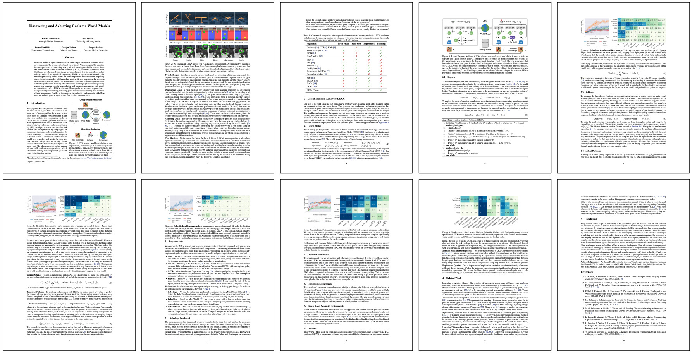

How can artificial agents learn to solve wide ranges of tasks in complex visual environments in the absence of external supervision? We decompose this question into two problems, global exploration of the environment and learning to reliably reach situations found during exploration. We introduce the Latent Explorer Achiever (LEXA), a unified solution to these by learning a world model from the high-dimensional image inputs and using it to train an explorer and an achiever policy from imagined trajectories. Unlike prior methods that explore by reaching previously visited states, the explorer plans to discover unseen surprising states through foresight, which are then used as diverse targets for the achiever. After the unsupervised phase, LEXA solves tasks specified as goal images zero-shot without any additional learning. We introduce a challenging benchmark spanning across four standard robotic manipulation and locomotion domains with a total of over 40 test tasks. LEXA substantially outperforms previous approaches to unsupervised goal reaching, achieving goals that require interacting with multiple objects in sequence. Finally, to demonstrate the scalability and generality of LEXA, we train a single general agent across four distinct environments.
Discovering and Achieving Goals
LEXA explores the world and learns to solve arbitrary goal images purely from pixels and without any form of supervision. After the unsupervised interaction phase, LEXA solves complex tasks by reaching user-specified goal images.
Discovering Goals through Foresight
Prior work used retrospective exploration that searches the replay buffer for most interesting states. Instead, we explore with foresight, by querying the model for most novel states. This enables LEXA to explore beyond the frontier and significantly improve exploration performance.
Goal Reaching Benchmark
Zero-shot Evaluation
Kitchen
Goal
Execution (LEXA)

Goal
Execution (LEXA)

Goal
Execution (LEXA)
Bins
RoboYoga Walker

{kind=link}
{kind=link}
{kind=link}
{kind=link}
{kind=link}
{kind=link}
{kind=link}
{kind=link}
RoboYoga Quadruped
Goal
Execution (LEXA)

Goal
Execution (LEXA)

Source Code
Try our code for LEXA in TensorFlow V2 as well as our new new goal-conditioned RL benchmark!
Previous Works
Sekar*, Rybkin*, Daniilidis, Abbeel, Hafner, Pathak. Planning to Explore via Self-Supervised World Models. In ICML 2020. [website]
Hafner, Lillicrap, Ba, Norouzi. Dream to Control: Learning Behaviors by Latent Imagination. In ICLR 2020. [website]
Pathak, Gandhi, Gupta. Self-Supervised Exploration via Disagreement. In ICML 2019. [website]
|

|
Citation |
|
@misc{lexa2021,
title={Discovering and Achieving Goals via World Models},
author={Mendonca, Russell and Rybkin, Oleh and
Daniilidis, Kostas and Hafner, Danijar and Pathak, Deepak},
year={2021},
Booktitle={NeurIPS}
}
|